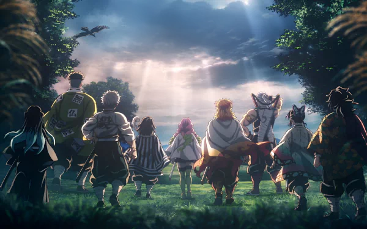

Demonslayer
Ambientada no Japão durante o Período Taishō (1912-1926),
a história gira em torno de Tanjirō Kamado, um garoto bondoso
e inteligente que vive junto com sua mãe, Kie Kamado, e seus
5 irmãos mais novos, ganhando dinheiro vendendo carvão, assim
como seu falecido pai, Tanjuro Kamado.
Certo dia, ao voltar para casa após ter ido a uma cidade vender
carvão, Tanjiro descobre que perdeu toda sua família durante um
ataque de onis. Uma de suas irmãs, Nezuko, é a única que sobreviveu
ao ataque. Nezuko então passa a ser um oni, mas ela surpreendentemente
ainda demonstra sinais de emoções e pensamentos humanos.
Tanjirō decide então se tornar um caçador de onis para descobrir mais
sobre eles. Com a ajuda de Nezuko, Tanjiro parte em jornadas pelo Japão
a fim de impedir que a mesma tragédia que afetou sua família aconteça
com outras pessoas, enquanto ele busca uma maneira de tornar Nezuko humana
novamente.
